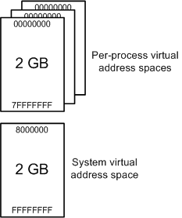
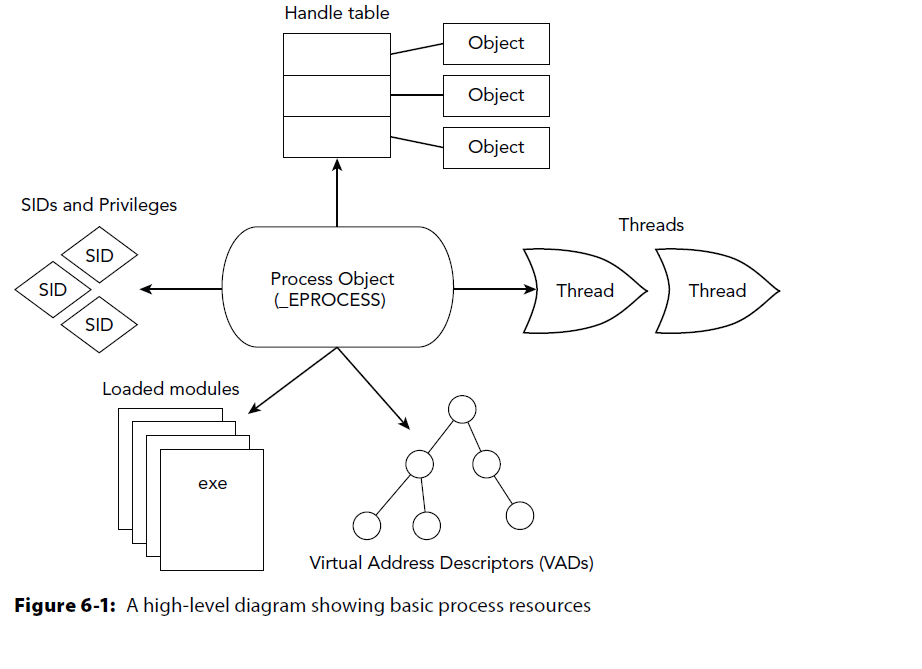
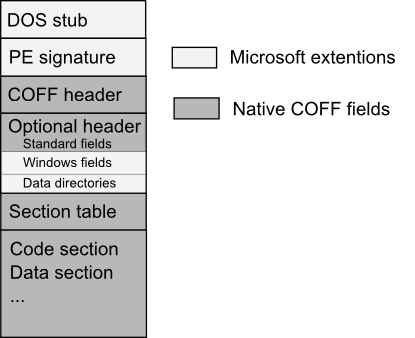
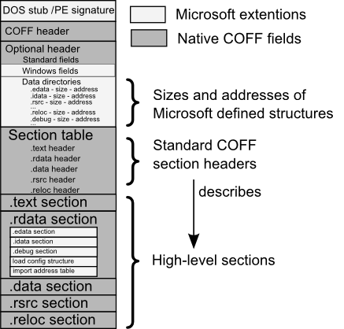
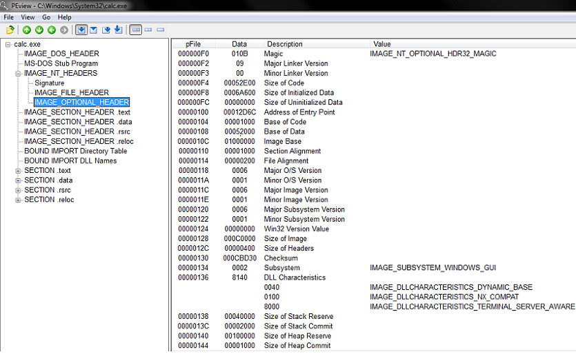
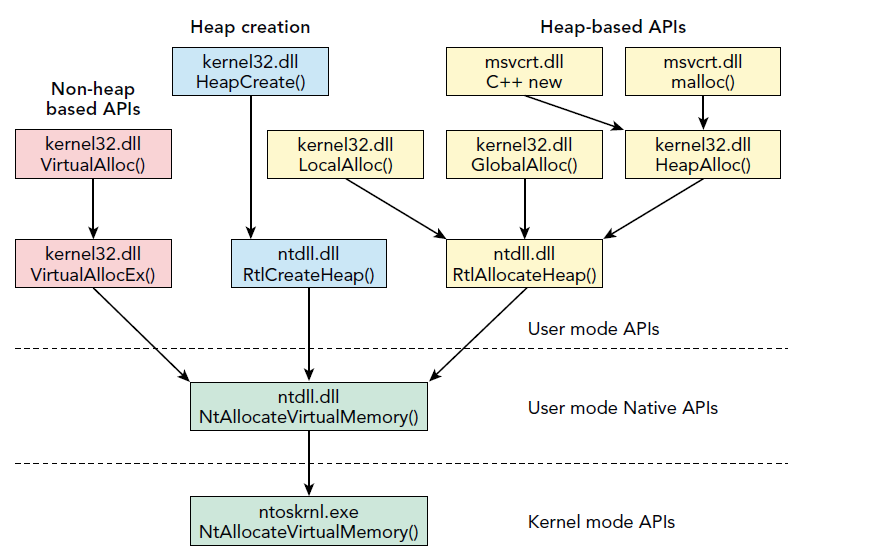
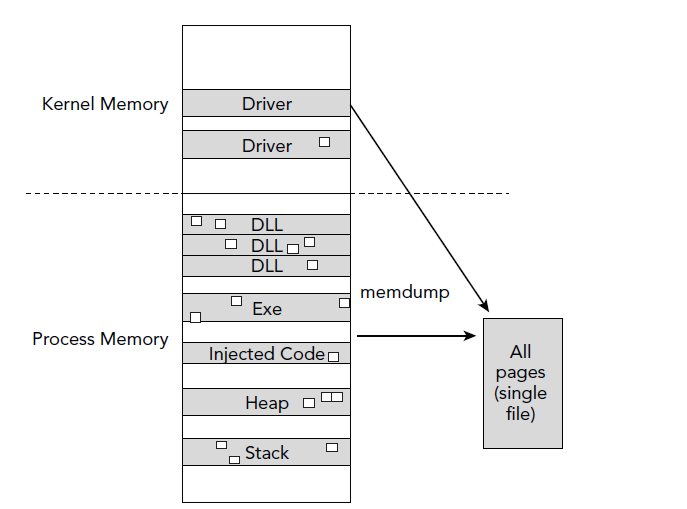
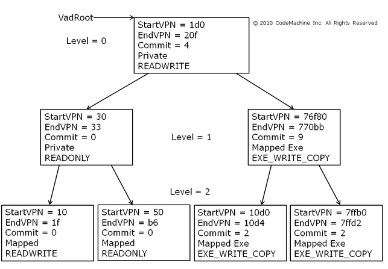
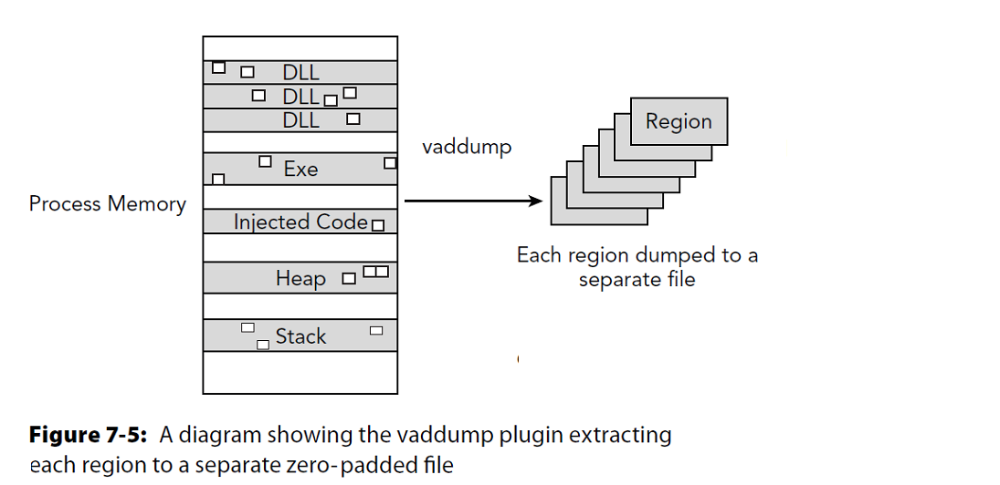

Process Memory Internals
Presenter Notes
What is in Memory?
- Kernel Pool Allocations
- Passwords
- E-mails
- Encryption Keys
- User inputted data
- Process information
- SQL Objects
- Credit cards
- Documents
- Chat Logs
- EVERYTHING (Unless on disk and not open)
Presenter Notes
Process Memory Range
Each process has its own private address space.
32 Bit Windows (Without altering it)
- Low 2GB (0x00000000 through 0x7FFFFFFF) Used by the process.
- High 2GB (0x80000000 through 0xFFFFFFFF) Used by the system
64 Bit Windows
- 8 Terabytes of private memory
- Can be reduced to 2GB like 32 Bit if requested.
Presenter Notes
Memory Range

Presenter Notes
User Land
DLLs
Envionmental Variables
PEB
Process Heaps
Thread Stacks
Mapped Files
Application Data
Executable
PE Space
Command Arguments
Presenter Notes
System Land
The high 2GB (0x80000000 through 0xFFFFFFFF) used by the system is shared through all processes.
Processes don't really mess with it as it could be catastrophic.
Symbols are here for items of interest such as PsActiveProcessList.
Presenter Notes
Processes

Presenter Notes
Process of Processes
Source Code → Compile → Link → Produce PECOFF file.
- exe = executable
- .dll = dynamically linked library
PECOFF = Portable Executable and Common Object File Format.
Presenter Notes
Process Layout

Presenter Notes
Note: Memory addresses change with ASLR (Address Space Layout Randomization) and could appear differently
Memory Sections
.Text/.Code = rx portions of program. Assembly code that CPU will run.
.rdata = r only data
- Export data
.data = rw initialized data
- Static variables initialized, global variables, strings,
.bss = rw un-initliaized data
- Static variables set to 0, reduces stack size, assures variables have space.
.rsrc = r resources
- Images, additional binaries, etc. Anything can be here.
Stack = rw
Heap = rw
Presenter Notes
OllyDbg layout

Presenter Notes
Portable Executable and Common Object File Format (PECOFF)
Presenter Notes
PECOFF
PE introduced in Windows NT 3.1 in 1993.
Modified from Unix COFF.
Portable Executable (PE) is the file format for executables and dlls.
- Encapsulated info for the windows os loader
Presenter Notes
PE
All Windows binaries, dll's and device drivers use the PE header to encapsulate the information the OS loader needs to manage the executable code.
M$ has kept backwards compatbility in the 20+ years of PE despite the format changing
Several sections that tell the dynamic linker which shared libraries are needed for the processes.
Presenter Notes
PE Cont
Characteristics of executable
Pointer to portions in executable
Import/Export Fields
Debugging information
Sizes
Permissions of memory sections
Presenter Notes
General PE-COFF Layout

Presenter Notes
IMAGE_DOS_HEADER
DOS Stub.. Nothing important here.. just remnants of DOS
e_lfanew at offset 0x3C has file offset of PE header, IMAGE_NT_HEADERS. It must be 4 byte aligned
>>> dt("_IMAGE_DOS_HEADER")
'_IMAGE_DOS_HEADER' (64 bytes)
0x0 : e_magic ['unsigned short'] #Magic bytes 4D5A → “MZ”
0x2 : e_cblp ['unsigned short']
0x4 : e_cp ['unsigned short']
0x6 : e_crlc ['unsigned short']
0x8 : e_cparhdr ['unsigned short']
0xa : e_minalloc ['unsigned short']
0xc : e_maxalloc ['unsigned short']
0xe : e_ss ['unsigned short']
0x10 : e_sp ['unsigned short']
0x12 : e_csum ['unsigned short']
0x14 : e_ip ['unsigned short']
0x16 : e_cs ['unsigned short']
0x18 : e_lfarlc ['unsigned short']
0x1a : e_ovno ['unsigned short']
0x1c : e_res ['array', 4, ['unsigned short']]
0x24 : e_oemid ['unsigned short']
0x26 : e_oeminfo ['unsigned short']
0x28 : e_res2 ['array', 10, ['unsigned short']]
0x3c : e_lfanew ['long']
Presenter Notes
IMAGE_NT_HEADERS
PE Header
Contains
- IMAGE_FILE_HEADER
- IMAGE_OPTIONAL_HEADERS
Magic Bytes ("Signature") 5045 → “PE”
>>> dt("_IMAGE_NT_HEADERS")
'_IMAGE_NT_HEADERS' (248 bytes)
0x0 : Signature ['unsigned long']
0x4 : FileHeader ['_IMAGE_FILE_HEADER']
0x18 : OptionalHeader ['_IMAGE_OPTIONAL_HEADER']
Presenter Notes
IMAGE_FILE_HEADER
Compile time
- 100-nanoseconds from 1/1/1601
Number of Sections
Size of Optional Header
Characteristics of IMAGE_FILE
>>> dt("_IMAGE_FILE_HEADER")
'_IMAGE_FILE_HEADER' (20 bytes)
0x0 : Machine ['unsigned short']
0x2 : NumberOfSections ['unsigned short']
0x4 : TimeDateStamp ['UnixTimeStamp', {'is_utc': True}]
0x8 : PointerToSymbolTable ['unsigned long']
0xc : NumberOfSymbols ['unsigned long']
0x10 : SizeOfOptionalHeader ['unsigned short']
0x12 : Characteristics ['unsigned short']
Presenter Notes
IMAGE_OPTIONAL_HEADER
Not really "optional" for DLL and EXE
Magic bytes 0x10b or 0x107
Address of Entry
Initial entry point of program
Base of Code
Relative Virtual Address (RVA) of .code
Image Base
Virtual Address of Image Base
Data Directorys and RVAs to them - 16 IMAGE_DATA_DIRECTORY
Size of Sections
Size of Image When Loaded and on disk
Good for Malware investigations
Stack sizes
File and Section Alignment
Presenter Notes
>>> dt("_IMAGE_OPTIONAL_HEADER")
'_IMAGE_OPTIONAL_HEADER' (224 bytes)
0x0 : Magic ['unsigned short']
0x2 : MajorLinkerVersion ['unsigned char']
0x3 : MinorLinkerVersion ['unsigned char']
0x4 : SizeOfCode ['unsigned long']
0x8 : SizeOfInitializedData ['unsigned long']
0xc : SizeOfUninitializedData ['unsigned long']
0x10 : AddressOfEntryPoint ['unsigned long']
0x14 : BaseOfCode ['unsigned long']
0x18 : BaseOfData ['unsigned long']
0x1c : ImageBase ['unsigned long']
0x20 : SectionAlignment ['unsigned long']
0x24 : FileAlignment ['unsigned long']
0x28 : MajorOperatingSystemVersion ['unsigned short']
0x2a : MinorOperatingSystemVersion ['unsigned short']
0x2c : MajorImageVersion ['unsigned short']
0x2e : MinorImageVersion ['unsigned short']
0x30 : MajorSubsystemVersion ['unsigned short']
0x32 : MinorSubsystemVersion ['unsigned short']
0x34 : Win32VersionValue ['unsigned long']
0x38 : SizeOfImage ['unsigned long']
0x3c : SizeOfHeaders ['unsigned long']
0x40 : CheckSum ['unsigned long']
0x44 : Subsystem ['unsigned short']
0x46 : DllCharacteristics ['unsigned short']
0x48 : SizeOfStackReserve ['unsigned long']
0x4c : SizeOfStackCommit ['unsigned long']
0x50 : SizeOfHeapReserve ['unsigned long']
0x54 : SizeOfHeapCommit ['unsigned long']
0x58 : LoaderFlags ['unsigned long']
0x5c : NumberOfRvaAndSizes ['unsigned long']
0x60 : DataDirectory ['array', 16, ['_IMAGE_DATA_DIRECTORY']]
Presenter Notes
Data Directories
Array of Struts that contain a VirtualAddress to a directory.
If the VirtualAddress and Size are 0, it is not used.
**IMAGE_DIRECTORY_ENTRY_EXPORT (0)The directory of exported symbols. mostly used for DLLs.
**IMAGE_DIRECTORY_ENTRY_IMPORT (1) The directory of imported symbols.
**IMAGE_DIRECTORY_ENTRY_RESOURCE (2) Directory of resources.
IMAGE_DIRECTORY_ENTRY_BASERELOC (5) Base relocation table. Necessary for DLLs.
**IMAGE_DIRECTORY_ENTRY_TLS (9) Thread local storage directory - structure unknown; contains variables that are declared "__declspec(thread)", i.e. per-thread global variable
IMAGE_DIRECTORY_ENTRY_BOUND_IMPORT (11) Bound import directory - see description of import directory.
IMAGE_DIRECTORY_ENTRY_IAT (12) Import Address Table - see description of import directory.
>>> dt("_IMAGE_DATA_DIRECTORY")
'_IMAGE_DATA_DIRECTORY' (8 bytes)
0x0 : VirtualAddress ['unsigned long']
0x4 : Size ['unsigned long']
Presenter Notes
Relative Virtual Addresses
An address relative to the ImageBase.
ImageBase is an actual virtual addresses to the IMAGE_DOS_HEADER
VirtualAddress = ImageBase + RVA
Presenter Notes
File Offset vs RVA
RVA are not the same as File offsets.
File offsets differ from memory due to file alignment and memory alignment differences
Alignment is specified in the optional header
File sections are on 512 byte boundaries
Memory has page aligned sections (usually)
FileOffset = RVA – VirtualAddress + PointerToRawData (from IMAGE_SECTION_HEADER)
Presenter Notes
IMAGE_SECTION_HEADER
Our memory sections... data, text/code, reloc, etc.
Array of section Headers defined in IMAGE_FILE_HEADER
IMAGE_NT_HEADERS + SizeOfOptionalHeader
Contain
- Name
- RVA
- Virtual Size (Memory)
- SizeOfRawData (file size)
- PointerToRawData
- Characteristics in memory (rwx)
Gets us to the SECTION
Presenter Notes
>>> dt("_IMAGE_SECTION_HEADER")
'_IMAGE_SECTION_HEADER' (40 bytes)
0x0 : Name ['String', {'length': 8}]
0x8 : Misc ['__unnamed_1f6c']
0xc : VirtualAddress ['unsigned long']
0x10 : SizeOfRawData ['unsigned long']
0x14 : PointerToRawData ['unsigned long']
0x18 : PointerToRelocations ['unsigned long']
0x1c : PointerToLinenumbers ['unsigned long']
0x20 : NumberOfRelocations ['unsigned short']
0x22 : NumberOfLinenumbers ['unsigned short']
0x24 : Characteristics ['unsigned long']
Presenter Notes
FIN PE

Presenter Notes
Tools to parse PE
Volatility.py
PEView
PEiD
Dependency Walker
Debuggers
IDA
Pefile.py
Write your own
Presenter Notes
PEView
Old software but still works and is used often
Easily view the contents of a PE binary

Presenter Notes
Dependency Walker
Scans binaries and builds a tree of dependent modules.

Presenter Notes
Writing your own PE parser
WinAPI in
//Error checking omitted
#include <Windows.h>
int main(int argc, char* argv[])
{
PIMAGE_DOS_HEADER dos_header;
PIMAGE_NT_HEADERS nt_headers;
PIMAGE_SECTION_HEADER section_header;
LPBYTE peFile;
DWORD peSize;
DWORD bytes_read;
HANDLE hFile = CreateFileA(argv[1], GENERIC_READ, FILE_SHARE_READ, NULL, OPEN_EXISTING, FILE_ATTRIBUTE_NORMAL, NULL);
peSize = GetFileSize(hFile, NULL);
peFile = (LPBYTE)malloc(peSize * sizeof(LPBYTE));
ReadFile(hFile, peFile, peSize, &bytes_read, 0);
//Set dos and nt header structures
dos_header = (PIMAGE_DOS_HEADER)(&peFile[0]);
nt_headers = (PIMAGE_NT_HEADERS)(&peFile[dos_header->e_lfanew]);
//Go through each section and print the name of it
int i;
for (i = 0; i < nt_headers->FileHeader.NumberOfSections; i++)
{
int section_offset = dos_header->e_lfanew + sizeof(IMAGE_NT_HEADERS)+(sizeof(IMAGE_SECTION_HEADER)* i);
section_header = (PIMAGE_SECTION_HEADER)(&peFile[section_offset]);
fprintf(stdout, "section: %s\n", section_header);
}
free(peFile);
return 0;
}
C:\bin>peReader.exe c:\windows\System32\calc.exe
section: .text
section: .data
section: .rsrc
section: .reloc
Presenter Notes
Memory Allocation
Presenter Notes
API's

Presenter Notes
Export Forwarding
Notice that HeapAlloc was forwarded to RtlAllocHeap
In the PE Export Address Table, you can forward an export to another DLLs import. IF the RVA is inside the exports section, it gets forwarded.
The RVA in turn points to the ASCII sting of the dll and symbol name it gets forwarded to.
Presenter Notes
Example
LPVOID WINAPI VirtualAllocEx(
_In_ HANDLE hProcess,
_In_opt_ LPVOID lpAddress,
_In_ SIZE_T dwSize,
_In_ DWORD flAllocationType,
_In_ DWORD flProtect
);
LPVOID WINAPI VirtualAlloc(
_In_opt_ LPVOID lpAddress,
_In_ SIZE_T dwSize,
_In_ DWORD flAllocationType,
_In_ DWORD flProtect
);
Presenter Notes
Memmap
Shows which pages are memory resident given a specific process DTB
Kernel DTB if you use this plugin on the Idle or System process
Displays the virtual address of the page, the corresponding physical offset of the page, and the size of the page
DumpFileOffset correlates the output of memmap with the dump file produced by the memdump plugin
Presenter Notes
Memmap
[root&windows]#volatility -f Win7.bin --profile=Win7SP0x86 -p 352 memmap
Volatility Foundation Volatility Framework 2.4
explorer.exe pid: 352
Virtual Physical Size DumpFileOffset
---------- ---------- ---------- --------------
0x00010000 0x127e9000 0x1000 0x0
0x00020000 0x1cd3f000 0x1000 0x1000
0x00021000 0x0f800000 0x1000 0x2000
0x00030000 0x0fc9c000 0x1000 0x3000
0x00031000 0x0f5dd000 0x1000 0x4000
0x00032000 0x0f31e000 0x1000 0x5000
0x00033000 0x0f05f000 0x1000 0x6000
0x00040000 0x12527000 0x1000 0x7000
0x00041000 0x122e8000 0x1000 0x8000
0x00050000 0x0f9d5000 0x1000 0x9000
0x00060000 0x1f5a9000 0x1000 0xa000
0x00061000 0x1f6aa000 0x1000 0xb000
0x00062000 0x1f7ab000 0x1000 0xc000
0x00063000 0x1faac000 0x1000 0xd000
Presenter Notes
Memdump
Similar to memap except it dumps all pages to disk for analysis.
-D OUTDIR
Use tools such as AV, disasm, etc.
[root&windows]#volatility -f Win7.bin --profile=Win7SP0x86 -p 352 memdump -D dumpedExplorer/
Volatility Foundation Volatility Framework 2.4
************************************************************************
Writing explorer.exe [ 352] to 352.dmp
Presenter Notes
Graphical Memdump

Presenter Notes
Virtual Address Descriptors (VAD)
Presenter Notes
VAD
Layout of memory segments
Used by the Windows Kernel to track contiguous ranges of process memory
DLLs and files mapped
Contains protection levels (rwx)
Pages committed vs reserved
Shared/Private Pages
Useful to scan for detecting code injection!
Presenter Notes
VAD
Self-balanced binary tree using AVL.
Each node is a range in process virtual memory.
Lower memory = Left
Higher memory = Right
More efficient O than linked lists.
Populated when memory is allocated
Presenter Notes
VADs are Lazy!
Combined with page tables VADs make use of lazy evaluation
-
Creating page tables takes time
-
VADs are quickly allocated and allow memory reservations.
Presenter Notes
lazy evaluation is delaying the evaluation of an expression until it is needed.
VAD vs Pages
VAD trees contain allocated memory
Page tables are not created until the process tries to reference the memory

Presenter Notes
_EPROCESS.VadRoot
VadRoot is contained in EPROCESS object.
Follow left and right subtrees.
Page directory is needed as address are virtual.
For _EPROCESS Win7SP1
dt("_EPROCESS")
0x278 : VadRoot ['_MM_AVL_TABLE']
Presenter Notes
Nodes
VAD Nodes differ based on API function used to allocate them.

Presenter Notes
_MMADDRESS_NODE
Alias to a _MMVAD* structure
>>> dt("_MMADDRESS_NODE")
'_MMADDRESS_NODE' (20 bytes)
-0x4 : Tag ['String', {'length': 4}]
0x0 : u1 ['__unnamed_158e']
0x4 : LeftChild ['pointer', ['_MMADDRESS_NODE']]
0x8 : RightChild ['pointer', ['_MMADDRESS_NODE']]
0xc : StartingVpn ['unsigned long']
0x10 : EndingVpn ['unsigned long']
Volatility uses pool tags to determine which tag to use by going -0xc or -0x4 bytes back from the node to see the PoolTag member of the _POOL_HEADER.
- Vadl -> Long
- Vadm -> Long
- Vad -> Long
- VadS -> Short
- VadF -> Short
Presenter Notes
MMVAD*
Represents VAD and are used to describe memory.
One per allocation
Allocation from a non-paged pool
Each MMVAD builds off of one before it _MMVAD_SHORT → MMVAD → _MMVAD_LONG
Presenter Notes
MMVAD_SHORT
>>> dt("_MMVAD_SHORT")
'_MMVAD_SHORT' (32 bytes)
-0x4 : Tag ['String', {'length': 4}]
0x0 : u1 ['__unnamed_1580']
0x4 : LeftChild ['pointer', ['_MMVAD']]
0x8 : RightChild ['pointer', ['_MMVAD']]
0xc : StartingVpn ['unsigned long']
0x10 : EndingVpn ['unsigned long']
0x14 : u ['__unnamed_1583']
0x18 : PushLock ['_EX_PUSH_LOCK']
0x1c : u5 ['__unnamed_1586']
MMVAD
>>> dt("_MMVAD")
'_MMVAD' (60 bytes)
-0x4 : Tag ['String', {'length': 4}]
0x0 : u1 ['__unnamed_1580']
0x4 : LeftChild ['pointer', ['_MMVAD']]
0x8 : RightChild ['pointer', ['_MMVAD']]
0xc : StartingVpn ['unsigned long']
0x10 : EndingVpn ['unsigned long']
0x14 : u ['__unnamed_1583']
0x18 : PushLock ['_EX_PUSH_LOCK']
0x1c : u5 ['__unnamed_1586']
0x20 : u2 ['__unnamed_1593']
0x24 : MappedSubsection ['pointer', ['_MSUBSECTION']]
0x24 : Subsection ['pointer', ['_SUBSECTION']]
0x28 : FirstPrototypePte ['pointer', ['_MMPTE']]
0x2c : LastContiguousPte ['pointer', ['_MMPTE']]
0x30 : ViewLinks ['_LIST_ENTRY']
0x38 : VadsProcess ['pointer', ['_EPROCESS']]
Presenter Notes
MMVAD_LONG
>>> dt("_MMVAD_LONG")
'_MMVAD_LONG' (72 bytes)
-0x4 : Tag ['String', {'length': 4}]
0x0 : u1 ['__unnamed_1580']
0x4 : LeftChild ['pointer', ['_MMVAD']]
0x8 : RightChild ['pointer', ['_MMVAD']]
0xc : StartingVpn ['unsigned long']
0x10 : EndingVpn ['unsigned long']
0x14 : u ['__unnamed_1583']
0x18 : PushLock ['_EX_PUSH_LOCK']
0x1c : u5 ['__unnamed_1586']
0x20 : u2 ['__unnamed_1593']
0x24 : Subsection ['pointer', ['_SUBSECTION']]
0x28 : FirstPrototypePte ['pointer', ['_MMPTE']]
0x2c : LastContiguousPte ['pointer', ['_MMPTE']]
0x30 : ViewLinks ['_LIST_ENTRY']
0x38 : VadsProcess ['pointer', ['_EPROCESS']]
0x3c : u3 ['__unnamed_1c3f']
0x44 : u4 ['__unnamed_1c45']
Presenter Notes
MMVAD* Continued
MMVAD and LONG Contains a _SUBSECTION pointer
- _CONTROL_AREA Ptr to Corresponding _FILE_OBJECT structure can be referenced.
Injected code has no backed file
- Found from MMVAD_SHORT
Each MMVAD contain Flags.. MMVAD*.u.Flags
Presenter Notes
MMVAD*.u.Flags
CommitCharge → Number of pages committed in region
- Useful for detecting injection
If CommitCharge and MemCommit are 0, memory is reserved and not commited.
Protection → Memory access to allow in region
Only initial access is shown in VAD
[Flags()]
public enum MemoryProtection : uint
{
EXECUTE = 0x10,
EXECUTE_READ = 0x20,
EXECUTE_READWRITE = 0x40,
EXECUTE_WRITECOPY = 0x80,
NOACCESS = 0x01,
READONLY = 0x02,
READWRITE = 0x04,
WRITECOPY = 0x08
}
Presenter Notes
MMVAD*.u.Flags
>>> dt("_MMVAD_FLAGS")
'_MMVAD_FLAGS' (4 bytes)
0x0 : CommitCharge ['BitField', {'end_bit': 19, 'start_bit': 0, 'native_type': 'unsigned long'}]
0x0 : MemCommit ['BitField', {'end_bit': 24, 'start_bit': 23, 'native_type': 'unsigned long'}]
0x0 : NoChange ['BitField', {'end_bit': 20, 'start_bit': 19, 'native_type': 'unsigned long'}]
0x0 : PrivateMemory ['BitField', {'end_bit': 32, 'start_bit': 31, 'native_type': 'unsigned long'}]
0x0 : Protection ['BitField', {'end_bit': 29, 'start_bit': 24, 'native_type': 'unsigned long'}]
0x0 : Spare ['BitField', {'end_bit': 31, 'start_bit': 29, 'native_type': 'unsigned long'}]
0x0 : VadType ['BitField', {'end_bit': 23, 'start_bit': 20, 'native_type': 'unsigned long'}]
Presenter Notes
Volatility VAD
VadInfo
VadDump
VadTree
VadWalk
Presenter Notes
VadInfo
Information about a process's VAD nodes
The address of the MMVAD structure in kernel memory
The starting and ending virtual addresses in process memory that the MMVAD structure pertains to
The VAD Tag
The VAD flags, control flags, etc
The name of the memory mapped file (if one exists)
Memory protection
Verbose output...
Presenter Notes
Vadinfo
[root&windows]#volatility -f Win7.bin --profile=Win7SP0x86 pslist
0x863cc540 ProcessHacker. 1108 352 9 215 1 0 2013-10-15 18:47:10 UTC+0000
[root&windows]#volatility -f Win7.bin --profile=Win7SP0x86 vadinfo -p 1108
Volatility Foundation Volatility Framework 2.4
************************************************************************
Pid: 1108
VAD node @ 0x85a98f50 Start 0x02230000 End 0x0232ffff Tag VadS
Flags: CommitCharge: 3, PrivateMemory: 1, Protection: 4
Protection: PAGE_READWRITE
Vad Type: VadNone
VAD node @ 0x85e2bf08 Start 0x01220000 End 0x01344fff Tag Vadm
Flags: CommitCharge: 11, Protection: 7, VadType: 2
Protection: PAGE_EXECUTE_WRITECOPY
Vad Type: VadImageMap
ControlArea @8637acd0 Segment a1843008
NumberOfSectionReferences: 1 NumberOfPfnReferences: 198
NumberOfMappedViews: 1 NumberOfUserReferences: 2
Control Flags: Accessed: 1, File: 1, Image: 1
FileObject @85ad4958, Name: \Users\Daniel\Desktop\processhacker-2.31-bin\x86\ProcessHacker.exe
First prototype PTE: a1843038 Last contiguous PTE: fffffffc
Flags2: Inherit: 1, LongVad: 1
VAD node @ 0x863c3530 Start 0x002f0000 End 0x002f1fff Tag Vad
Flags: NoChange: 1, Protection: 1
Protection: PAGE_READONLY
Vad Type: VadNone
ControlArea @85ebde18 Segment 8a83ef30
NumberOfSectionReferences: 1 NumberOfPfnReferences: 0
NumberOfMappedViews: 21 NumberOfUserReferences: 22
Control Flags: Commit: 1
First prototype PTE: 8a83ef60 Last contiguous PTE: 8a83ef68
Flags2: Inherit: 1, SecNoChange: 1
VAD node @ 0x86363fc0 Start 0x75a20000 End 0x75a54fff Tag Vad
Flags: CommitCharge: 2, Protection: 7, VadType: 2
Protection: PAGE_EXECUTE_WRITECOPY
Vad Type: VadImageMap
ControlArea @853e9150 Segment 88dfe880
NumberOfSectionReferences: 1 NumberOfPfnReferences: 46
NumberOfMappedViews: 28 NumberOfUserReferences: 29
Control Flags: Accessed: 1, File: 1, Image: 1
FileObject @853e9340, Name: \Windows\System32\ws2_32.dll
First prototype PTE: 88dfe8b0 Last contiguous PTE: fffffffc
Flags2: Inherit: 1
VAD node @ 0x86390228 Start 0x73d10000 End 0x73d2cfff Tag Vad
Flags: CommitCharge: 5, Protection: 7, VadType: 2
Protection: PAGE_EXECUTE_WRITECOPY
Vad Type: VadImageMap
ControlArea @8433fb60 Segment a3c596a8
NumberOfSectionReferences: 0 NumberOfPfnReferences: 24
NumberOfMappedViews: 1 NumberOfUserReferences: 1
Control Flags: File: 1, Image: 1
FileObject @843244c8, Name: \Users\Daniel\Desktop\processhacker-2.31-bin\x86\plugins\DotNetTools.dll
First prototype PTE: a3c596d8 Last contiguous PTE: fffffffc
Flags2: Inherit: 1
Presenter Notes
PAGE_EXECUTE_WRITECOPY
[root&windows]#volatility -f Win7.bin --profile=Win7SP0x86 vadinfo -p 1108 | grep EXECUTE -B 3
Volatility Foundation Volatility Framework 2.4
VAD node @ 0x85e2bf08 Start 0x01220000 End 0x01344fff Tag Vadm
Flags: CommitCharge: 11, Protection: 7, VadType: 2
Protection: PAGE_EXECUTE_WRITECOPY
--
VAD node @ 0x853c88f8 Start 0x74b00000 End 0x74b08fff Tag Vad
Flags: CommitCharge: 2, Protection: 7, VadType: 2
Protection: PAGE_EXECUTE_WRITECOPY
--
VAD node @ 0x8643ef30 Start 0x633c0000 End 0x633eafff Tag Vad
Flags: CommitCharge: 5, Protection: 7, VadType: 2
Protection: PAGE_EXECUTE_WRITECOPY
--
VAD node @ 0x85296ee8 Start 0x630a0000 End 0x630bbfff Tag Vad
Flags: CommitCharge: 5, Protection: 7, VadType: 2
Protection: PAGE_EXECUTE_WRITECOPY
--
VAD node @ 0x8532cd40 Start 0x630e0000 End 0x630f8fff Tag Vad
Flags: CommitCharge: 4, Protection: 7, VadType: 2
Protection: PAGE_EXECUTE_WRITECOPY
--
VAD node @ 0x86284438 Start 0x630c0000 End 0x630d6fff Tag Vad
Flags: CommitCharge: 4, Protection: 7, VadType: 2
Protection: PAGE_EXECUTE_WRITECOPY
--
VAD node @ 0x85a3f610 Start 0x63120000 End 0x63136fff Tag Vad
Flags: CommitCharge: 7, Protection: 7, VadType: 2
Protection: PAGE_EXECUTE_WRITECOPY
--
VAD node @ 0x8639f008 Start 0x63100000 End 0x6311ffff Tag Vad
Flags: CommitCharge: 5, Protection: 7, VadType: 2
Protection: PAGE_EXECUTE_WRITECOPY
--
VAD node @ 0x863c54e8 Start 0x633a0000 End 0x633b8fff Tag Vad
Flags: CommitCharge: 4, Protection: 7, VadType: 2
Protection: PAGE_EXECUTE_WRITECOPY
--
VAD node @ 0x862fede0 Start 0x72220000 End 0x72238fff Tag Vad
Flags: CommitCharge: 4, Protection: 7, VadType: 2
Protection: PAGE_EXECUTE_WRITECOPY
--
VAD node @ 0x84408130 Start 0x720f0000 End 0x72101fff Tag Vad
Flags: CommitCharge: 2, Protection: 7, VadType: 2
Protection: PAGE_EXECUTE_WRITECOPY
--
VAD node @ 0x85f3e0c0 Start 0x71ae0000 End 0x71b2efff Tag Vad
Flags: CommitCharge: 11, Protection: 7, VadType: 2
Protection: PAGE_EXECUTE_WRITECOPY
--
VAD node @ 0x842bc0d8 Start 0x70df0000 End 0x70df5fff Tag Vad
Flags: CommitCharge: 2, Protection: 7, VadType: 2
Protection: PAGE_EXECUTE_WRITECOPY
--
VAD node @ 0x8610dae8 Start 0x70ba0000 End 0x70ba7fff Tag Vad
Flags: CommitCharge: 2, Protection: 7, VadType: 2
Protection: PAGE_EXECUTE_WRITECOPY
--
VAD node @ 0x853c0600 Start 0x71330000 End 0x71389fff Tag Vad
Flags: CommitCharge: 2, Protection: 7, VadType: 2
Protection: PAGE_EXECUTE_WRITECOPY
--
VAD node @ 0x84d09b20 Start 0x71b30000 End 0x71b87fff Tag Vad
Flags: CommitCharge: 2, Protection: 7, VadType: 2
Protection: PAGE_EXECUTE_WRITECOPY
--
VAD node @ 0x8429a0b8 Start 0x71db0000 End 0x71db5fff Tag Vad
Flags: CommitCharge: 2, Protection: 7, VadType: 2
Protection: PAGE_EXECUTE_WRITECOPY
--
VAD node @ 0x862c5070 Start 0x721e0000 End 0x721f3fff Tag Vad
Flags: CommitCharge: 4, Protection: 7, VadType: 2
Protection: PAGE_EXECUTE_WRITECOPY
--
VAD node @ 0x86452298 Start 0x72110000 End 0x7211cfff Tag Vad
Flags: CommitCharge: 2, Protection: 7, VadType: 2
Protection: PAGE_EXECUTE_WRITECOPY
--
VAD node @ 0x842ae340 Start 0x72130000 End 0x72167fff Tag Vad
Flags: CommitCharge: 2, Protection: 7, VadType: 2
Protection: PAGE_EXECUTE_WRITECOPY
--
VAD node @ 0x8639b928 Start 0x72200000 End 0x7221afff Tag Vad
Flags: CommitCharge: 4, Protection: 7, VadType: 2
Protection: PAGE_EXECUTE_WRITECOPY
--
VAD node @ 0x84d0d3c0 Start 0x73f80000 End 0x740affff Tag Vad
Flags: CommitCharge: 3, Protection: 7, VadType: 2
Protection: PAGE_EXECUTE_WRITECOPY
--
VAD node @ 0x8432b098 Start 0x73860000 End 0x7386ffff Tag Vad
Flags: CommitCharge: 2, Protection: 7, VadType: 2
Protection: PAGE_EXECUTE_WRITECOPY
Presenter Notes
Exploring
VAD node @ 0x85e2bf08 Start 0x01220000 End 0x01344fff Tag Vadm
Flags: CommitCharge: 11, Protection: 7, VadType: 2
Protection: PAGE_EXECUTE_WRITECOPY
Vad Type: VadImageMap
ControlArea @8637acd0 Segment a1843008
NumberOfSectionReferences: 1 NumberOfPfnReferences: 198
NumberOfMappedViews: 1 NumberOfUserReferences: 2
Control Flags: Accessed: 1, File: 1, Image: 1
FileObject @85ad4958, Name: \Users\Daniel\Desktop\processhacker-2.31-bin\x86\ProcessHacker.exe
First prototype PTE: a1843038 Last contiguous PTE: fffffffc
Flags2: Inherit: 1, LongVad: 1
[root&windows]#volatility -f Win7.bin --profile=Win7SP0x86 -p 1108 volshell
>>> dt("_FILE_OBJECT", 0x85ad4958)
[_FILE_OBJECT _FILE_OBJECT] @ 0x85AD4958
0x0 : Type 5
0x2 : Size 128
0x4 : DeviceObject 2228297248
0x8 : Vpb 2228234896
0xc : FsContext 2706235640
0x10 : FsContext2 2706466952
0x14 : SectionObjectPointer 2242594952
0x18 : PrivateCacheMap 0
0x1c : FinalStatus 0
0x20 : RelatedFileObject 0
0x24 : LockOperation 0
0x25 : DeletePending 0
0x26 : ReadAccess 1
0x27 : WriteAccess 0
0x28 : DeleteAccess 0
0x29 : SharedRead 1
0x2a : SharedWrite 0
0x2b : SharedDelete 1
0x2c : Flags 278594
0x30 : FileName \Users\Daniel\Desktop\processhacker-2.31-bin\x86\ProcessHacker.exe
0x38 : CurrentByteOffset 2242726288
0x40 : Waiters 0
0x44 : Busy 0
0x48 : LastLock 0
0x4c : Lock 2242726308
0x5c : Event 2242726324
0x6c : CompletionContext 0
0x70 : IrpListLock 0
0x74 : IrpList 2242726348
0x7c : FileObjectExtension 0
>>>
Presenter Notes
vaddump
Dumps out the vad sections to a file
-o OFFSET, --offset=OFFSET
EPROCESS offset (in hex) in the physical address space
-p PID, --pid=PID Operate on these Process IDs (comma-separated)
-n NAME, --name=NAME Operate on these process names (regex)
-D DUMP_DIR, --dump-dir=DUMP_DIR
Directory in which to dump the VAD files
-b BASE, --base=BASE Dump VAD with BASE address (in hex)
No base = dump all nodes to disk.
Each node gets a .dmp file
Presenter Notes
graphical

Presenter Notes
vaddump plugin
[root&windows]#volatility -f Win7.bin --profile=Win7SP0x86 pslist
0x86499d40 mspaint.exe 3196 352 8 119 1 0 2013-10-15 18:46:16 UTC+0000
[root&windows]#mkdir dumpedVad
[root&windows]#volatility -f Win7.bin --profile=Win7SP0x86 vaddump -p 3196 -D dumpedVad/
Volatility Foundation Volatility Framework 2.4
Pid Process Start End Result
---------- -------------------- ---------- ---------- ------
3196 mspaint.exe 0x02970000 0x029affff dumpedVad/mspaint.exe.3da99d40.0x02970000-0x029affff.dmp
3196 mspaint.exe 0x02630000 0x02630fff dumpedVad/mspaint.exe.3da99d40.0x02630000-0x02630fff.dmp
3196 mspaint.exe 0x00610000 0x0064ffff dumpedVad/mspaint.exe.3da99d40.0x00610000-0x0064ffff.dmp
3196 mspaint.exe 0x00110000 0x0014ffff dumpedVad/mspaint.exe.3da99d40.0x00110000-0x0014ffff.dmp
3196 mspaint.exe 0x00040000 0x00041fff dumpedVad/mspaint.exe.3da99d40.0x00040000-0x00041fff.dmp
3196 mspaint.exe 0x00020000 0x0002ffff dumpedVad/mspaint.exe.3da99d40.0x00020000-0x0002ffff.dmp
3196 mspaint.exe 0x00010000 0x0001ffff dumpedVad/mspaint.exe.3da99d40.0x00010000-0x0001ffff.dmp
Presenter Notes
VADWALK
Vadinfo in table form
Less information
[root&windows]#volatility -f Win7.bin --profile=Win7SP0x86 vadwalk -p 3196
Volatility Foundation Volatility Framework 2.4
************************************************************************
Pid: 3196
Address Parent Left Right Start End Tag
---------- ---------- ---------- ---------- ---------- ---------- ----
0x8649dd60 0x86499fb8 0x8533bf68 0x864b4bf0 0x02970000 0x029affff VadS
0x8533bf68 0x8649dd60 0x862e8350 0x864ae460 0x02630000 0x02630fff Vadm
0x862e8350 0x8533bf68 0x86487c20 0x85e23f78 0x00610000 0x0064ffff VadS
0x86487c20 0x862e8350 0x8642bab0 0x85e2d9b0 0x00110000 0x0014ffff Vadm
0x8642bab0 0x86487c20 0x862e4c18 0x85a186c8 0x00040000 0x00041fff Vad
0x862e4c18 0x8642bab0 0x864927a8 0x864990c8 0x00020000 0x0002ffff VadS
0x864927a8 0x862e4c18 0x00000000 0x00000000 0x00010000 0x0001ffff Vad
0x864990c8 0x862e4c18 0x00000000 0x00000000 0x00030000 0x00033fff Vad
0x85a186c8 0x8642bab0 0x853bbac8 0x85a18428 0x000e0000 0x000e1fff Vad
0x853bbac8 0x85a186c8 0x85aa19d0 0x85a18710 0x00060000 0x000c6fff Vad
Presenter Notes
VADTREE
Display VAD nodes in a visual tree
[root&windows]#volatility -f Win7.bin --profile=Win7SP0x86 vadtree -p 3196
Volatility Foundation Volatility Framework 2.4
************************************************************************
Pid: 3196
0x02970000 - 0x029affff
0x02630000 - 0x02630fff
0x00610000 - 0x0064ffff
0x00110000 - 0x0014ffff
0x00040000 - 0x00041fff
0x00020000 - 0x0002ffff
0x00010000 - 0x0001ffff
0x00030000 - 0x00033fff
0x000e0000 - 0x000e1fff
0x00060000 - 0x000c6fff
0x00050000 - 0x00050fff
0x000d0000 - 0x000d6fff
0x000f0000 - 0x000fdfff
0x00100000 - 0x00100fff
0x004f0000 - 0x004fffff
0x00320000 - 0x00420fff
0x00250000 - 0x00317fff
0x00150000 - 0x0024ffff
0x00440000 - 0x004bffff
0x00430000 - 0x00430fff
0x004d0000 - 0x004d1fff
0x004c0000 - 0x004c0fff
0x004e0000 - 0x004e0fff
0x00560000 - 0x0059ffff
0x00520000 - 0x00530fff
0x00500000 - 0x00510fff
0x00540000 - 0x00550fff
0x005c0000 - 0x005c6fff
0x005a0000 - 0x005b0fff
0x005d0000 - 0x0060ffff
0x023d0000 - 0x0240ffff
0x02380000 - 0x0238ffff
0x00e90000 - 0x014a6fff
0x00d30000 - 0x00d60fff
0x00850000 - 0x00c4ffff
0x00650000 - 0x00844fff
0x00c50000 - 0x00d2efff
0x00e70000 - 0x00e7ffff
0x00d70000 - 0x00e6ffff
0x00e80000 - 0x00e82fff
0x020b0000 - 0x0237efff
0x014b0000 - 0x020affff
0x023a0000 - 0x023a1fff
0x02390000 - 0x02390fff
0x023b0000 - 0x023b0fff
0x023c0000 - 0x023c0fff
0x02540000 - 0x0257ffff
0x02470000 - 0x02470fff
0x02440000 - 0x0244ffff
0x02420000 - 0x0243ffff
0x02410000 - 0x02414fff
0x02460000 - 0x02460fff
0x02450000 - 0x02450fff
0x02510000 - 0x02510fff
0x02490000 - 0x024cffff
0x02480000 - 0x02480fff
0x02520000 - 0x02520fff
0x02530000 - 0x02530fff
0x02600000 - 0x02600fff
0x025d0000 - 0x025d0fff
0x02590000 - 0x025cffff
0x02580000 - 0x02580fff
0x025f0000 - 0x025f0fff
0x025e0000 - 0x025e0fff
0x02620000 - 0x02620fff
0x02610000 - 0x02610fff
Presenter Notes
More
VAD Tree is useful and is used by many volatility commands
Contains injected code
Command histories with cmdscan
Can find executable images (“MZ”)
Presenter Notes
Having fun with it
[root&windows]#volatility -f Win7.bin --profile=Win7SP0x86 pslist | grep explore
Volatility Foundation Volatility Framework 2.4
0x8625b420 explorer.exe 352 1848 43 904 1 0 2013-10-15 18:45:59 UTC+0000
[root&windows]#volatility -f Win7.bin --profile=Win7SP0x86 -p 352 volshell
Volatility Foundation Volatility Framework 2.4
Current context: explorer.exe @ 0x8625b420, pid=352, ppid=1848 DTB=0x3ecec3e0
Welcome to volshell! Current memory image is:
file:///root/amf/windows/Win7.bin
To get help, type 'hh()'
>>> process=proc()
>>> process_space = process.get_process_address_space()
>>> for vad in process.VadRoot.traverse():
... data = process_space.read(vad.Start, 1024)
... if data:
... found = data.find("MZ")
... if found != -1:
... print"Found signature in VAD", hex(vad.Start)
...
Found signature in VAD 0x6f670000L
Found signature in VAD 0x990000L
Found signature in VAD 0x1e30000L
Found signature in VAD 0x3520000L
Found signature in VAD 0x3dd0000L
Found signature in VAD 0x3e20000L
Found signature in VAD 0x3ea0000L
Found signature in VAD 0x50d0000L
Found signature in VAD 0x5470000L
Found signature in VAD 0x6aaa0000L
Found signature in VAD 0x633f0000L
Found signature in VAD 0x75c0000L
Found signature in VAD 0x70c0000L
Found signature in VAD 0x7000000L
Found signature in VAD 0x62b90000L
Found signature in VAD 0x8cd0000L
Found signature in VAD 0x63140000L
Found signature in VAD 0x63380000L
Multiply address by size of page to get Vaddr
Presenter Notes
Other uses of VAD
Finding
- Encryption Keys
- Passwords
- . . .